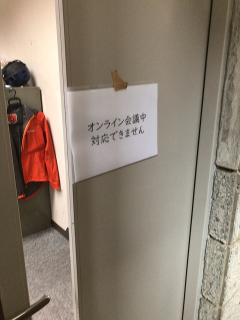
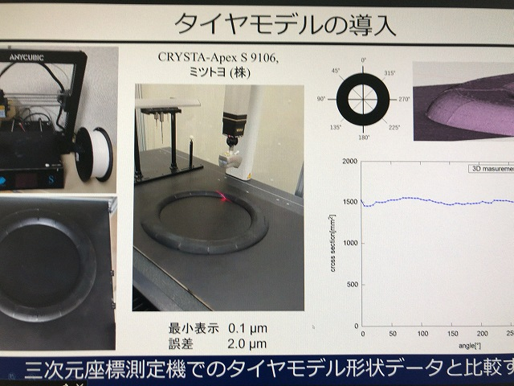
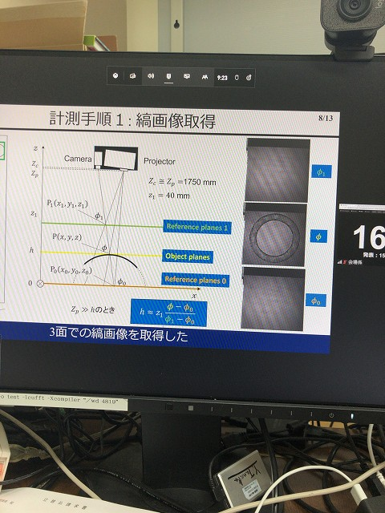
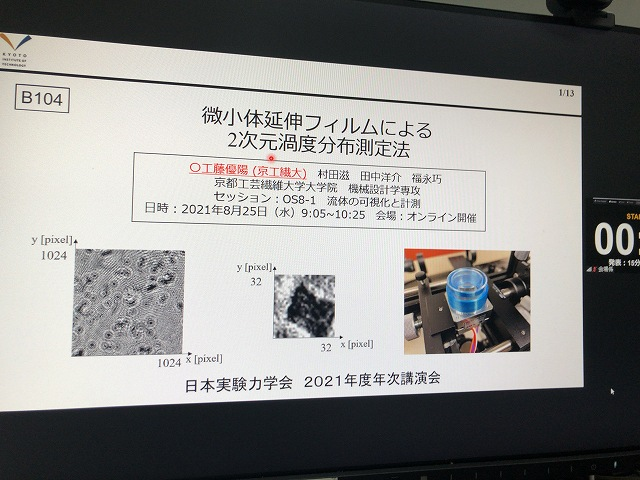
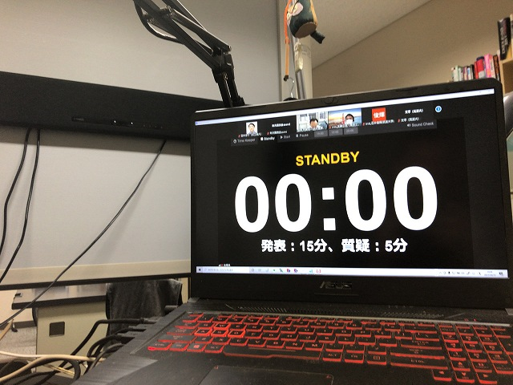
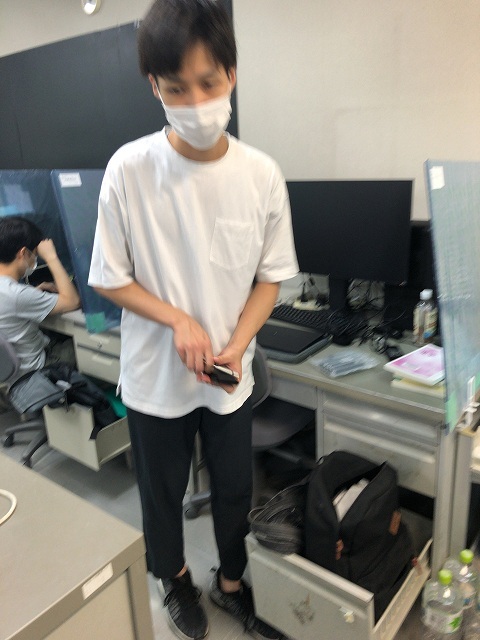

| ・ 日本実験力学会 2021年度年次講演会@オンライン（弘前大学主催） (R03.08.25-27) | |||
去年はコロナで参加見送り前々回の徳島以来の実験力学会参加です。 M1のNさんが光計測の「サンプリングモアレ法を用いたタイヤ形状計測システムの精度評価」という題目で、M1のK藤さんが流体計測の「微小体延伸フィルムによる2次元渦度分布測定法」という題目で研究発表しました。 准教授の人は「流体の可視化と計測 (2)」の座長を担当しました。Nさんは朝一番の発表のため自宅から参加・発表。K藤さんは新Fの部屋からです。 |
|||
|

准教授の人曰く「貼ってないとお互い困るので」 |

Nさん動作チェック中 | ||
|

良い滑り出し |

K藤さん | ||
|

ずっと座りっぱなしでしんどい |

着替えました | ||